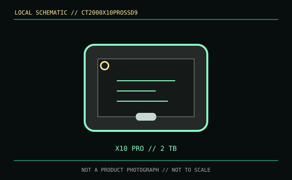

[ REMOVABLE MEDIA // MODEL-SPECIFIC RECORD ]
Crucial X10 Pro 2 TB (CT2000X10PROSSD9)
The CT2000X10PROSSD9 is the complete 2 TB external portable SSD product, not an internal M.2 module or DIY enclosure. Capacity and model are stated separately from the X10 and X9 Pro product families.

IDENTIFICATION: Match CT2000X10PROSSD9 exactly; the X10 Pro name and 2 TB capacity distinguish it from other Crucial external SSDs and capacities.
Format, capacity and compatibility
| Product / part ID | Crucial X10 Pro Portable SSD, 2 TB, CT2000X10PROSSD9 |
|---|---|
| Interface | USB 3.2 Gen 2x2 (20 Gb/s), USB Type-C. The included cable and host must support the intended USB transfer mode. |
| Performance | Manufacturer maximum sequential read up to 2,100 MB/s and write up to 2,000 MB/s. The quoted maxima are not guaranteed sustained rates; host, cable, workload and thermal conditions affect throughput. |
| NAND / endurance | The cited Crucial retail specifications do not disclose NAND type or a TBW rating for this portable SKU; neither is assumed from the manufacturer brand. |
| Compatibility | Crucial lists Windows, macOS, Android, iPadOS, Linux and supported consoles. Actual use depends on the host having USB data and filesystem support; full speed specifically requires a Gen 2x2 host. |
| Product caveat | IP55 resistance and limited drop tests are enclosure claims, not protection from all water, impact or data loss. This is a complete portable-drive SKU, not an enclosure accessory. |
Handling and preservation
Keep ports dry and clear, eject cleanly, and retain the label and purchase information. Maintain more than one independent copy and verify data with checksums and restore tests. Do not use a portable SSD as the only long-term copy: the manufacturer does not publish a consumer TBW or unpowered-retention guarantee here.
Sources and standards
- Crucial — X10 Pro 2 TB product pageManufacturer page for model CT2000X10PROSSD9 and specifications.
- Crucial — X10 Pro product flyer / specifications (PDF)Manufacturer product overview and rated performance.
- USB-IF — USB 3.2 specifications overviewInterface-generation reference.